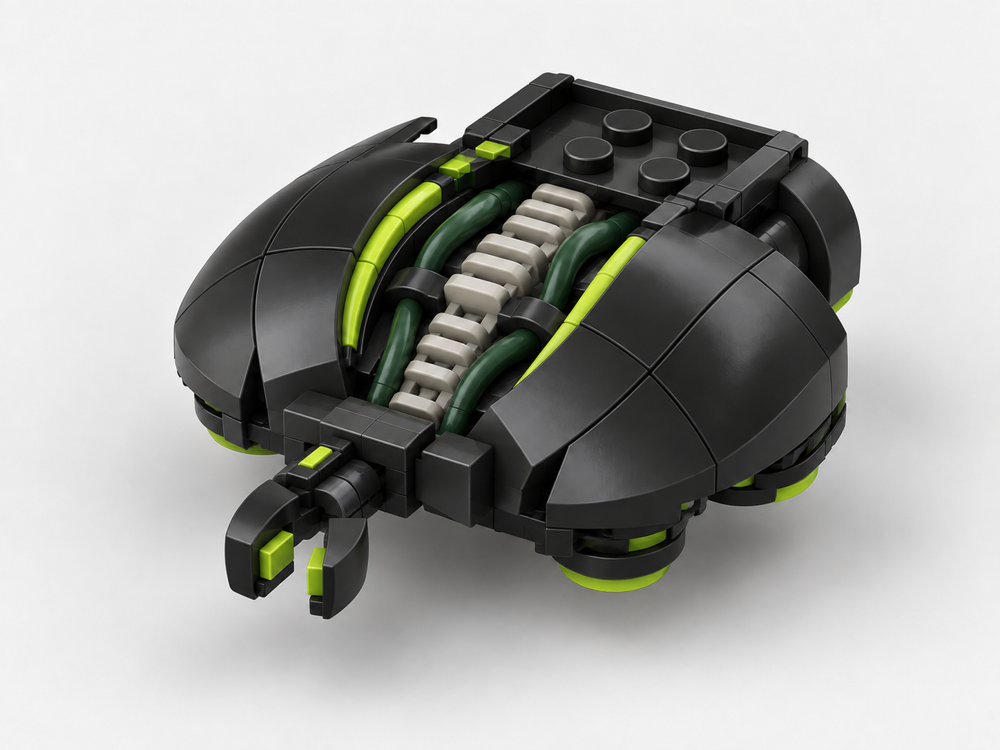

Прийнятий Production Target
- Низький корпус із двох вигнутих броньованих стулок.
- Захищені світлі опори й темно-зелені живі канали всередині.
- Порожня зовнішня люлька та один короткий затискач, вбудований у ніс.
Фракція: Прибульці · Роль: робітник, будівельник і ремонтник

Це нова пропозиція ігрового вигляду, не фотографія офіційної моделі LEGO.
Ціль прийнята: силует і пропорції, співвідношення броні та внутрішніх опор, форма робочого затискача й порожня люлька. T084 ще не розпочато.
unit.aliens.etx_servitor.design-package PASS; хеш цілі, статус, реєстр і локальні посилання перевірено.